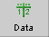
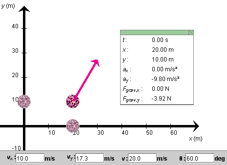
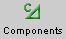
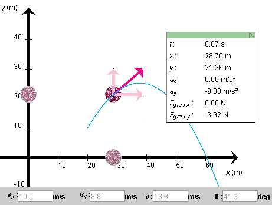
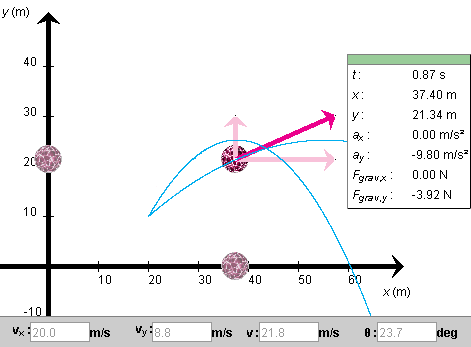

Instructions
This page is designed to get you started using the applet. The applet should be open. The step-by-step instructions on this page are to be done in the applet. You may need to toggle back and forth between instructions and applet if your screen space is limited.
 Setting the Ball's Initial
Position and Velocity
Setting the Ball's Initial
Position and Velocity
 Setting a Target and Measuring Point
Coordinates
Setting a Target and Measuring Point
Coordinates
Exercise 1 (Initial Position). Reset  the applet.
the applet.
Press the Data button  to display the Data box. It displays the ball's x and y position coordinates. They are updated when you drag the ball.
Click on the ball, and drag it to the initial position
(x,y) = (20.0, 10.0) m, as shown in Figure 1
below. You may find this easier to do if you display the
grid by pressing the Grid toggle button  . (The grid is not shown in Figure
1.)
. (The grid is not shown in Figure
1.)
It also helps to adjust one coordinate at a time. Drag the ball to x = 20.0 m without worrying about the y-coordinate. Then, hold down the Shift key while dragging the ball. Now the ball will move only vertically, and it will be much easier to adjust its initial y-coordinate to 10.0 m. The x-coordinate will remain unchanged while the Shift key is held down.

Figure 1
Notice the shadow balls on the x and y axes. They move with the ball and are projections of the ball onto the two axes. Their positions represent the ball's x and y coordinates.
Exercise 2 (Initial Velocity). The magenta arrow represents the ball's velocity. Adjust the initial velocity so that its magnitude is 20 m/s and its direction forms an angle q with the positive x-axis equal to 60o. Do this by typing these values in the third and fourth velocity data fields, shown at the bottom of Figure 1, and then press the ENTER key on the keyboard.
Notice how the display of the x and y components of the ball's velocity is automatically adjusted to vx = 10.0 m/s and vy = 17.3 m/s. You can enter values in any of the four velocity data fields. When you press ENTER, the values in the other fields are adjusted automatically so that they are consistent.
You can adjust the initial velocity also by dragging the tip of the velocity vector. The four velocity data fields will be adjusted accordingly.

Exercise 1. REWIND the applet, display the Data box, and make sure that the ball's initial position and velocity are as in the previous section. These values are listed below. Otherwise, RESET the applet and then adjust the applet to these values.
PLAY the motion. Display the ball's path by pressing the
Trace toggle button  .
.
When the ball has disappeared from the applet window,
REWIND  the
applet and click PLAY once more to watch the motion again.
the
applet and click PLAY once more to watch the motion again.
Observe how the shadow ball on the x-axis moves to the right with constant velocity. Observe how the shadow ball on the y-axis performs an up-and-down motion like a ball thrown straight up
Exercise 2. REWIND the applet, and press the Components toggle button  to display the horizontal and vertical components of the velocity vector. PLAY the motion again and PAUSE it on the way up. Figure 2 below illustrates what you might see.

Figure 2
Exercise 3. REWIND the applet. This time, STEP
 through the
motion by clicking the Step button repeatedly.
through the
motion by clicking the Step button repeatedly.
Observe that the horizontal component of the velocity vector remains constant and, correspondingly, that the value of vx in the data panel stays constant at 10.0 m/s. The vertical component of the velocity is continually decreasing in magnitude on the way up, changes direction at the top, and then is continually increasing in magnitude on the way down. Correspondingly, the values of vy in the data panel are continually decreasing. (Even when they are negative they are decreasing. E.g., -10 is less than -5.)
Exercise 4. REWIND the applet. This time, change the x-component of the ball's velocity to 20 m/s without changing the y-component. Then press Play. Observe that the ball is now moving more quickly in the horizontal direction, but that its vertical motion is unaffected.
To observe this in detail, REWIND the applet and then STEP it forward to the time at which you paused the motion in Exercise 2. Here, this is at t = 0.87 s. Figure 3 below shows the applet at t = 0.87 s. The vertical position of the ball is y = 21.34 m, compared to y = 21.36 in Figure 2, and the y-component of velocity is 8.8 m/s in both Figures 2 and 3. Also, the two trajectories have the same height.
The slight discrepancy of 0.02 m in the value of y in Figures 2 and 3 is the result of a round-off in the y-component of the velocity. When the applet calculates vy from v and q as in Exercise 2, it works with the exact value of vy, which to four decimals is 17.3205 m/s, but displays vy only to one decimal as 17.3 m/s in the data field. In Exercise 4, when the value of vx is changed to 20.0 m/s and ENTER is pressed, the applet takes the value of vy = 17.3 m/s that is displayed in the Data field to be exact.

Figure 3
Exercise 5. As a final element of the motion,
observe the ball's acceleration. Do so by selecting the
Vectors toggle button  and checking Acceleration in the panel that
opens up. The acceleration vector will be shown as an
orange arrow.
and checking Acceleration in the panel that
opens up. The acceleration vector will be shown as an
orange arrow.
Replay the previous two motions, and observe the acceleration vector each time. To replay the motions, click REWIND and set the initial velocity component in the x-direction equal to either 10.0 m/s or 20.0 m/s, without changing the initial y-component. Then PLAY the motion. Observe that the acceleration vector is constant throughout each motion and is the same for both motions.
Replay the two motions once more, but this time display the components of the velocity vector. Since the x-component of the velocity is constant, all changes in the velocity are due to those in the y-component. Observe the behaviour of the velocity vector and of its y-component during the motion. The tips of both should be moving downward at a constant rate, when the ball is on its way up, right at the top, and when it is on its way down. Remember that acceleration is the rate at which the tip of the velocity vector is moving.
In this simulation where there is no air resistance, the ball's acceleration is equal to the acceleration due to gravity. You can vary the magnitude g of the acceleration due to gravity, and therefore the magnitude of the ball's acceleration, between 0 and 20 m/s2 by means of the g-slider. Replay the two motions for another value of g, and again observe the acceleration and the motions of the tip of the velocity vector and its y-component.
Also observe that a smaller value of g results in a higher trajectory.
Exercise 1. Rewind the applet, set
vx to 20 m/s, and make sure the
y-component of the initial velocity is still 17.3
m/s. Step
through the motion by clicking the Step button repeatedly
until you reach the same elapsed time as in Figure 3,
namely, t = 0.87 s. Adjust the Time Step slider to
large time steps at first, say, 0.20 s, and then to 0.01-s
time steps as you approach t = 0.87 s..
Compare the position and velocity values displayed by your applet to those shown in Figure 3 above.
Fine-tuned stepping through a motion is useful in determining the time required for the ball to reach a certain position, e.g., its maximum height, the time required to drop back down to the x-axis, or the time required to reach a target. (About targets, see the next section.)
Exercise 1. Select the Target button . Then click
anywhere in the applet window. A bull's eye target
 will be placed at the point clicked. The
(x,y)-coordinates of the target's location
will be displayed as long as the mouse button is
depressed. Click on a target, and drag it with the
mouse. Click on the target without dragging, and the
target will removed, but only if the Target button is
still selected.
will be placed at the point clicked. The
(x,y)-coordinates of the target's location
will be displayed as long as the mouse button is
depressed. Click on a target, and drag it with the
mouse. Click on the target without dragging, and the
target will removed, but only if the Target button is
still selected.
Exercise 2. The Coordinates button  functions like the target button. Select it, and click
anywhere in the applet window. A small "+" will be placed
at the point clicked, and the
(x,y)-coordinates of the point will be
displayed. The coordinates remain displayed after the mouse
button is released. With the Coordinates button selected,
click on a point marked by a "+", and drag it to a new
location. Click on the "+" without dragging it, and the "+"
and its coordinates will be removed, but only if the
Coordinates button is selected.
functions like the target button. Select it, and click
anywhere in the applet window. A small "+" will be placed
at the point clicked, and the
(x,y)-coordinates of the point will be
displayed. The coordinates remain displayed after the mouse
button is released. With the Coordinates button selected,
click on a point marked by a "+", and drag it to a new
location. Click on the "+" without dragging it, and the "+"
and its coordinates will be removed, but only if the
Coordinates button is selected.
Exercise 3. Reset the applet. Set a target, and find an initial velocity so that the ball will hit the target.